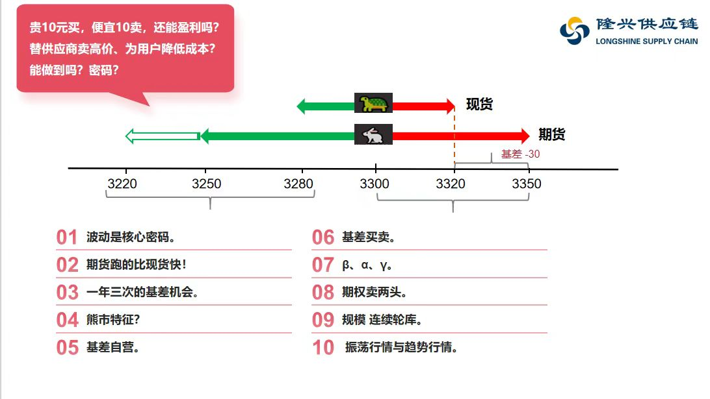

元 / 吨
每吨净收益 = 每吨毛收益 − 综合成本
“贵买10、便宜卖10”为什么仍可能赚钱？
原图提出这个问题，但没有承诺一定盈利。正套按真实案例让利：采购3960＋10＝3970，销售3816−10＝3806，期货成交价不变。现货−164＋期货170＝6元/吨，等于原26元收益减去20元让利。其他成本低于6元/吨，净收益才为正。
反套让利示例则先少卖10元、后多花10元买回，原130元毛收益变成110元。两者都需要实际基差收益足以覆盖让利和成本。
空头、多头和平仓是什么意思？
卖出开仓后持有期货空头，以后买入同一合约平仓。期货价格下降对空头有利，上涨对空头不利。开仓时卖的是标准化合约，库存仍在，不等于已经把实物钢材卖给客户，也不是立刻收到整批货款。
买入开仓后持有期货多头，以后卖出同一合约平仓。价格上涨对多头有利，下跌对多头不利。平仓结束合约头寸；本演示的实物钢材买卖另行完成，不用买钢材“填补空头”来平仓。
期货需要保证金并逐日结算，持仓期间可能追加保证金。实物交割是另一条路径，需满足合约与交割规则。
证监会投资者教育：多头、空头与平仓反套需要什么现货条件？怎么算库存收益？
本演示采用“卖出已有可用库存，之后买回同量同质库存”的路径。先有可卖库存或合法可执行的货源安排，才能履约，不能假设任何商品都可无条件裸卖空。
4050卖出、3900补回，150元是这一轮库存卖出与补回的现金差；加期货−20元，得到130元/吨的策略毛收益。它不包含原库存历史采购成本对应的会计利润，也未扣借货、采购、资金、运输等成本。借货路径还须归还并计入借货费用。
基差套利为什么不是无风险套利？
未来基差不保证按预期变化。正套在基差走弱时受损，反套在基差走强时受损。等量套保也保留基差、品级与地域错配、期限与数量错配、流动性、交易对手、仓储损耗及现金流风险。
只有交易价格、交割、资金和全部成本等条件都能锁定，并能执行整个组合时，才可以讨论严格意义的无风险套利。本软件演示的是承担基差风险的交易。
基差走强是不是“差的绝对值更大”？
不是。本演示始终用“现货−期货”的带符号数值。−30变成−10，也是走强20；100变成74，是走弱26。正基差只说明现货比期货贵，不能单凭正负号判断该做正套还是反套。
除了期现正套、反套，还有哪些套利？
PPT 第20–22页还介绍跨期、跨市与跨品种套利：分别比较同品种不同月份、不同市场、不同品种的相对价格。它们研究的不是这里这一个现货与期货的基差，数量配比、交易成本和风险也不同。
主界面专门完整演示期现正套与反套，避免将不同策略混成同一个公式。
原图、PPT与计算口径
PPT 第12页给出正套与反套定义；第13、16页为正套同涨示例；第13、17页为反套示例。两组都是教学示例，不是隆兴真实成交记录。
2022真实业务来自第14–15页：10月从宝闽采购1.6万吨，其中5,000吨与茂高联合正套，01合约。客户按期货均价3716加基差100点价采购。26元/吨×5,000吨＝13万元，是期现毛收益，未扣成本和合作分成，剩余11,000吨不在测算中。
第15页“177−144＝26”的笔误已更正为“170−144＝26”。其中用“买钢材交割”解释买入平仓的比喻已改为合约交易与实物交易分别说明。

Logo 使用 PPT 内嵌原图。原图中的机会频次、期权等概括不作为本案例结论。让利和亏损情景均为教学假设。
上期所刊载研究：基差风险与套保效果苏州隆兴供应链管理有限公司 · 教学演示，非实时行情或投资建议